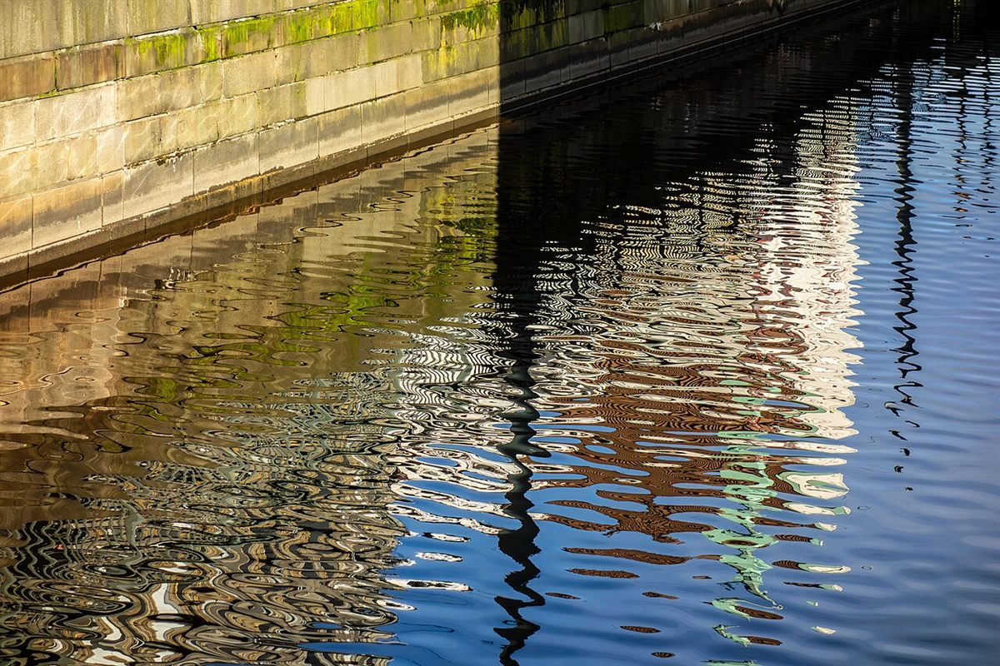
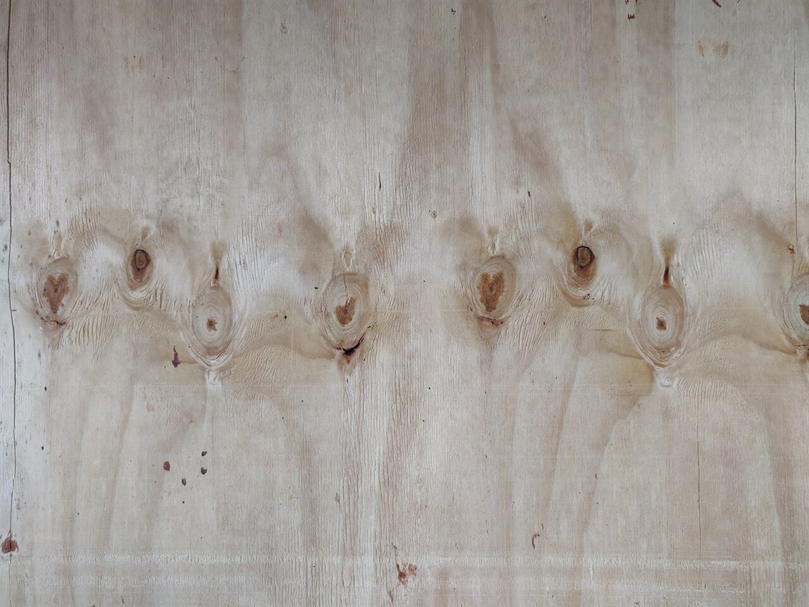

口コミ
ここに掲載している声は、実際のお客様の声ではありません。こうした声が集まるお店になれたら、というイメージを制作側で作成した例です。
掲載している写真はフリー素材のイメージ写真で、Coffee Now の実際の写真ではありません。他の地域で撮影されたもの、撮影地が不明なものを含みます。

イメージ例
仕事のあとに、少しだけ立ち寄って気持ちを切りかえられる場所が近くにあったらいいなと思います。
イメージ例
待ち合わせまで時間があるとき、ふらっと入りやすい雰囲気のお店だったらいいなと思います。
イメージ例
ひとりでも気後れせず、静かに過ごせる場所になっていたらうれしいなと思います。
実際の声のご紹介について
実際のお客様の声は、お店のご許可をいただいたうえで掲載します。